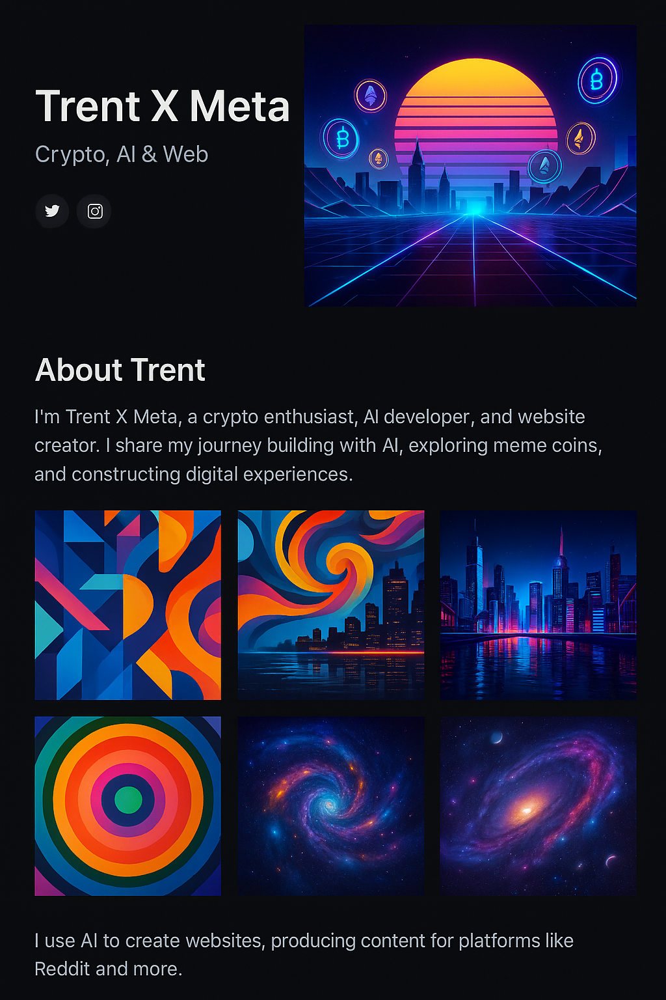

Crypto & Meme Coins: Navigating the Landscape
June 5, 2025
Meme coins—digital currencies born from internet jokes and viral trends—have taken the crypto world by storm. From Dogecoin and Shiba Inu to countless spinoffs, these tokens prove that community and culture can be just as powerful as technology.
As fun as meme coins are, they’re also extremely volatile. Prices can skyrocket on social buzz and crash just as quickly. When I explore meme coins, I do so for the community experience and entertainment value rather than serious investment. I never invest more than I’m willing to lose.
If you’re curious about meme coins, here are a few tips:
- Study the project’s community and leadership. Is there transparency? Is the community positive and engaged?
- Understand tokenomics. Look at supply, distribution and any mechanisms that could impact price.
- Be wary of scams. Avoid projects with anonymous teams, unrealistic promises or high‑pressure tactics.
- Keep long‑term goals in mind. Meme coins are highly speculative—treat them like a game rather than a retirement plan.
Ultimately, the meme coin ecosystem is a fascinating mix of creativity, humour and speculation. It embodies the wild side of crypto. By staying informed and cautious, you can enjoy the ride without getting burned.